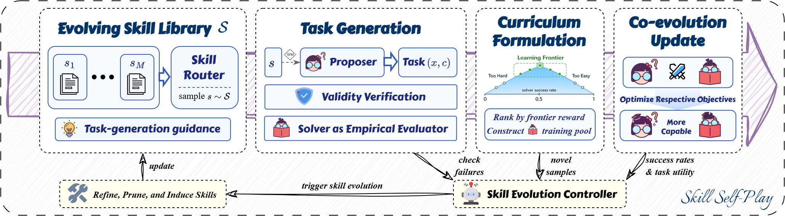

Qwen Skill Self-Play: Co-Evolving Proposer/Solver/Controller
TL;DR
- "Skill Self-Play: Pushing the Frontier of LLM Capability with Co-Evolving Skills" (Skill-SP; arXiv 2607.22529, July 2026 — the items.json entry lacks the id, located via search; authors Siyuan Huang, Pengyu Cheng, Haotian Liu, et al.; code at github.com/Qwen-Applications/skill-self-play, consistent with the tweet's attribution to Alibaba's Qwen team).
- Diagnosis: self-evolving LLM training faces a diversity–verifiability dilemma — environment-bound methods get precise rewards but narrow domains, while open-ended self-generated tasks are diverse but unverifiable, letting misleading rewards pollute the loop. Agent skills are proposed as the middle ground: each skill supports deep, verifiable execution in its scenario, while dynamic routing across a growing skill library preserves open-ended variety.
- Mechanism: a three-component RL self-play loop — a proposer generates challenging tasks conditioned on dynamically sampled skills, a solver attempts them to push its capability boundary, and a skill controller turns execution feedback into updates and expansions of the skill library. Claimed results: consistent ceiling gains for competent backbones and "striking turnarounds" for initially misaligned models on tool-use and reasoning benchmarks (no numbers in fetched sources).
Why this matters
The scaling bottleneck for self-evolving LLMs is not generating more tasks — models can propose tasks endlessly — it is generating tasks whose rewards you can trust. The field has been stuck between two corners. Environment-bound self-play (code executors, math checkers, formal verifiers, fixed tool sandboxes) yields clean rewards but confines the curriculum to whatever the environment can express; the model gets better at Python and arithmetic while the open-ended capabilities you actually want go untrained. Open-ended self-generation (model proposes, model grades) spans any domain but couples task generation to unreliable self-judgment; noisy or gameable rewards then feed directly into RL, and error compounds across iterations — the reward-pollution failure that the Red Queen paper in this reading list catalogues from the evaluator side.
Skill-SP's contribution is identifying a structural resolution rather than a better judge: reorganize the task space itself around skills. This matters for the self-improving-agents thread because it changes what the skill abstraction is for. In Voyager, MSCE, or OpenSpace, skills are accumulated capability — a library the agent draws on at inference. Here, skills are additionally units of verifiable task generation for training: because a skill comes with a concrete execution scenario, tasks instantiated through it inherit checkability. The skill library becomes the interface between open-endedness and grounded reward.
The core idea
A skill — a scenario-specific procedure with an executable grounding (tool workflows, code routines, structured task patterns) — has a property neither corner of the dilemma has: it is locally verifiable yet globally composable. Locally, executing a skill-scoped task produces concrete feedback (did the execution succeed, did outputs satisfy the skill's checks), so rewards are reliable without a hand-built environment per domain. Globally, sampling and mixing across a large, growing library of such skills makes the induced task distribution open-ended: variety comes from combinatorics over skills, not from unconstrained free-form generation.
So instead of "propose any task and self-grade" (diverse, unverifiable) or "train inside one sandbox" (verifiable, narrow), Skill-SP proposes tasks conditioned on dynamically sampled skills: every generated task is anchored to something executable and checkable, while the sampling distribution over the library keeps the curriculum broad and adaptive. The third piece closes the loop: the library itself is not static. A controller consumes execution feedback to refine existing skills and mint new ones, so the space of proposable-verifiable tasks expands as the solver improves — the co-evolution that gives the paper its title.
How it works

Framework figure from the paper's official repository (Qwen-Applications/skill-self-play, assets/skill_sp_framework.png); the arXiv HTML rendering of 2607.22529 is unavailable, so this is the authors' released version of the paper's framework diagram.
The framework couples three roles in a continuous RL loop (from the abstract; finer implementation details noted where inferred):
- Proposer. Samples skills from the current library (the "dynamic sampling" suggests the controller shapes this distribution — inferred from the thread, verify in the paper) and generates challenging tasks conditioned on them. Conditioning on a skill anchors each task to a verifiable execution scenario. As self-play demands, the proposer targets the solver's frontier: hard enough to be informative, grounded enough to be checkable.
- Solver. Attempts the proposed tasks, exploring candidate solutions "to push its capability boundaries." The solver is the component whose improvement is the point; it is trained with RL on execution-grounded rewards from these skill-scoped tasks.
- Skill controller. Collects execution feedback from solver attempts and uses it to update and expand the skill library — refining skill definitions, presumably adjusting which skills are worth sampling, and adding new skills as capabilities emerge. This is the component that makes the loop open-ended rather than a fixed-curriculum self-play game.
The three co-evolve: a stronger solver forces the proposer toward harder skill compositions; new execution feedback grows the library; a bigger library widens the proposer's task space; a wider task space pushes the solver further. Whether proposer and solver share one policy network, how skill-level verification is concretely implemented (executable checks vs. rubric criteria), the seed library's origin, and the RL algorithm are all unspecified in the fetched sources — verify in the paper and the released code.
Reward structure (reconstruction — the arXiv HTML is unavailable; assembled from the released code at examples/reward_function/tool_questioner.py, verify against the paper). A proposed task first passes format and skill-contract checks; contract-valid tasks are attempted several times by the current solver to estimate an empirical solve rate \(\hat{p}\). The proposer's reward is frontier-seeking uncertainty minus a redundancy penalty:
where \(\min(\hat{p},1-\hat{p})\) peaks at \(\hat{p}=0.5\) — tasks the solver solves about half the time, i.e., its learning frontier — and \(\rho\) is a clustering-based repetition penalty over the proposal batch (near-duplicate proposals split the reward); tasks failing the contract checks score at or near zero. The solver is trained with standard clipped policy-gradient RL on the execution-grounded per-task reward
with the frontier pool (tasks near \(\hat{p}\approx 0.5\)) forming its training curriculum. (reconstruction — verify against the paper)
# Skill-SP cycle (assembled from abstract + official repo README/code)
loop:
skills <- router samples from skill library L # dynamic skill routing
tasks <- proposer(skills) # tasks conditioned on skills
tasks <- keep only contract-valid tasks # automatic validity checks
for each task:
p_hat <- solver's empirical solve rate (n attempts) # difficulty estimate
r_prop <- max(0, min(p_hat, 1 - p_hat) - repetition_penalty)
pool <- tasks near the solver's frontier (p_hat ~ 0.5)
RL-update proposer on r_prop
RL-update solver on execution-grounded rewards over pool
# skill controller: feedback-driven library evolution
aggregate contract-check failures, novel samples, success/utility signals
refine / prune / induce skill packages -> update L
Results
No quantitative results were retrievable from the abstract or search results, so only the claimed qualitative findings can be stated:
- On tool-use and reasoning benchmarks, Skill-SP "consistently pushes the performance ceiling of competent backbones" — i.e., it functions as an evolution engine on top of already-good models rather than only rescuing weak ones.
- It "catalyz[es] striking turnarounds for initially misaligned models" — backbones that start poorly suited to the task regime recover under the loop. This is the more surprising claim, since self-play loops usually amplify a bad starting policy (garbage proposals, garbage rewards); if the skill grounding genuinely stabilizes the loop for weak initial policies, that is the strongest evidence for the central thesis. Which models, which benchmarks, and effect sizes: verify in the paper (arXiv 2607.22529) and repo.
How it connects
- Within this reading list. The Lean benchmark-coevolution paper (2607.17352) is the closest relative: both hold that the task distribution must evolve with the agent; Lean uses a mastery-throttled curriculum under a formal verifier, Skill-SP uses a learned proposer under skill-level execution checks — the two points on the verifier-strength spectrum. The Red Queen / Co-Evolving Evaluation Criteria paper (2606.26294) supplies the failure theory Skill-SP's skill grounding is designed to dodge. MSCE and OpenSpace build skill libraries for inference-time reuse and sharing; Skill-SP repurposes the same abstraction as a training-time reward substrate — a genuinely different role for the same object. The self-improvement survey (2607.13104) would file this as a hybrid: model-parameter updates (solver RL) driven by a co-evolving scaffold component (the library).
- Prior work. Asymmetric self-play (Sukhbaatar et al., 2017) originated the proposer/solver split; AlphaZero demonstrated self-play's ceiling given perfect verification; SPIN (Chen et al., 2024) brought self-play to LLM fine-tuning. The most direct ancestor is Absolute Zero Reasoner (Zhao et al., 2025): proposer-solver RL with a code executor as the verifier — Skill-SP effectively generalizes AZR's single verifiable environment into a dynamic library of verifiable skill scenarios. Search Self-Play (2510.18821) did the analogous move for search agents. Voyager (Wang et al., 2023) is the canonical ever-growing skill library, but for acting, not for reward generation.
Critical take
- The verification claim carries the whole paper — and it's the part the abstract says least about. "Each skill ensures deep, verifiable execution" is an assertion; skills whose checks are themselves LLM-judged would quietly reintroduce the reward pollution the framework claims to eliminate. The first thing to inspect in the paper/code is what a skill's verifier concretely is, and what fraction are hard checks vs. soft judgments.
- The controller is a new attack surface. The skill library is updated from execution feedback — a learned/heuristic component modifying the reward-generating substrate mid-training. Drift, degenerate easy-to-verify skills crowding out hard ones, or proposer-controller collusion (tasks tuned to checks the solver already games) are all live risks; the Red Queen paper predicts exactly this class of failure when evaluation machinery co-evolves without an external anchor.
- Diversity is bounded by the library's reachable set. Combinatorial variety over skills is still variety within skill-shaped tasks; capabilities that don't factor into executable scenarios (long-form judgment, open-domain synthesis) may remain untrained while benchmarks in-distribution for the library improve.
- No numbers in the fetched sources — "pushes the ceiling" and "striking turnarounds" are unquantified until the tables are read; the misaligned-model claim especially needs baselines against plain RL on a fixed task set with matched compute.
If you remember three things
- The framing worth stealing: self-evolution's core tension is task diversity vs. reward verifiability, and skills — locally executable, globally composable — are a structural middle ground, not another judge.
- The loop: proposer generates tasks conditioned on dynamically sampled skills → solver trains on execution-grounded rewards → skill controller folds feedback back into an expanding library; all three co-evolve.
- Skill-SP turns the skill library from an inference-time convenience (Voyager/MSCE/OpenSpace) into a training-time reward substrate — and its soundness rests entirely on how hard the per-skill verification really is (arXiv 2607.22529; code: Qwen-Applications/skill-self-play).